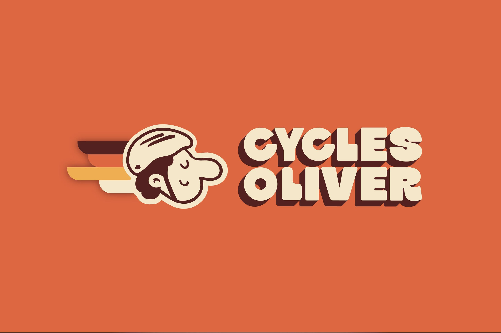
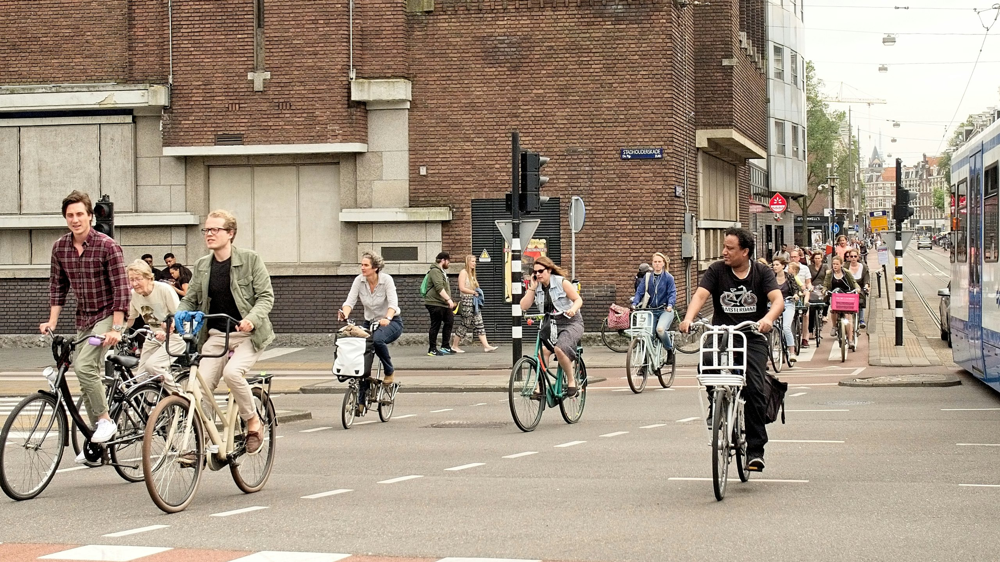
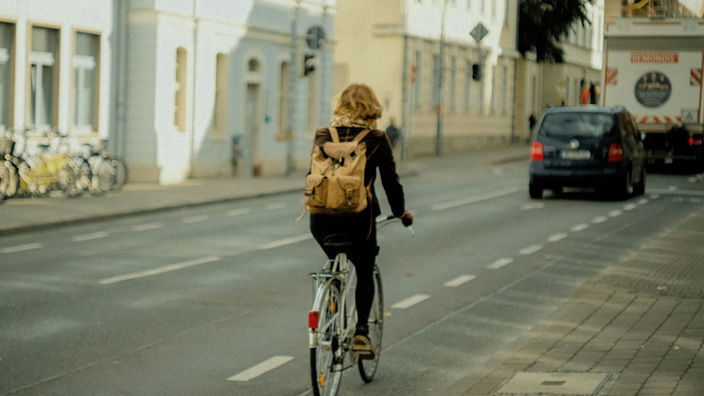
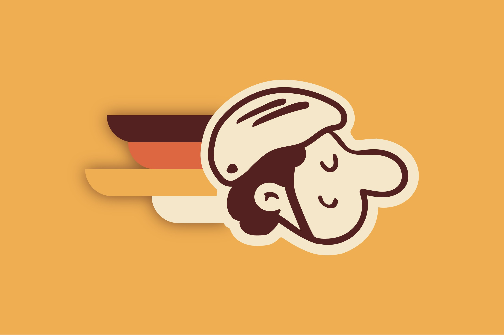
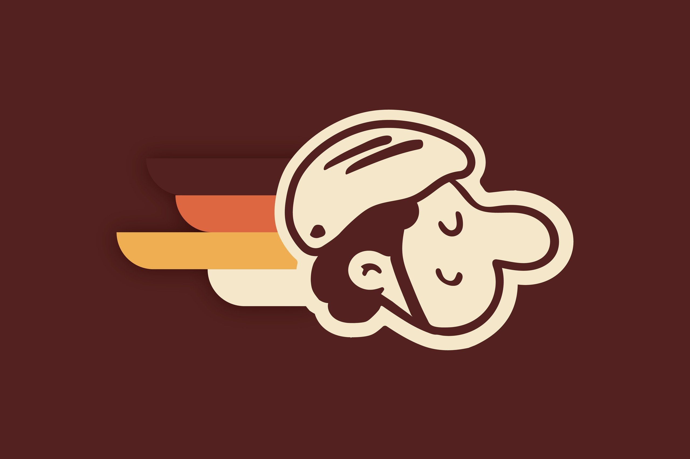
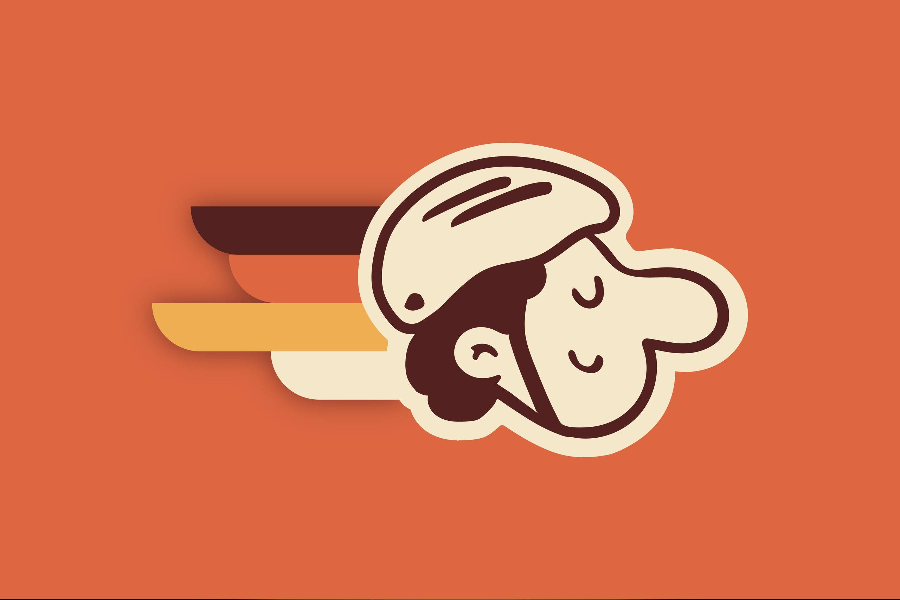
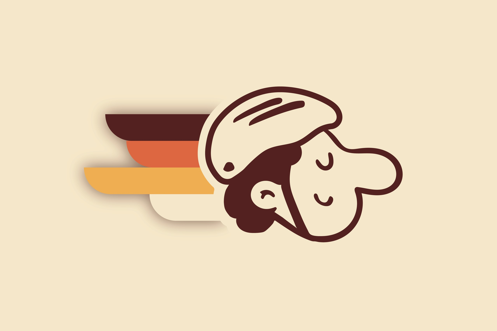
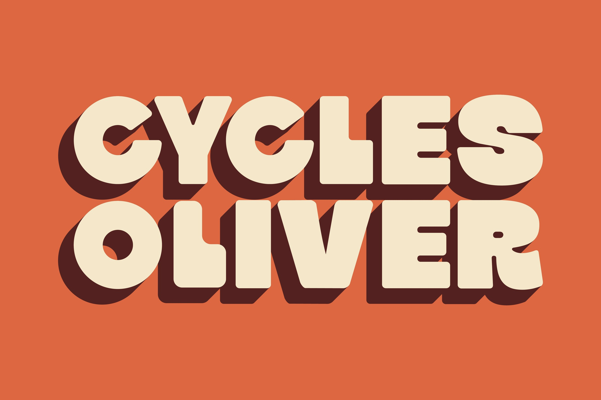
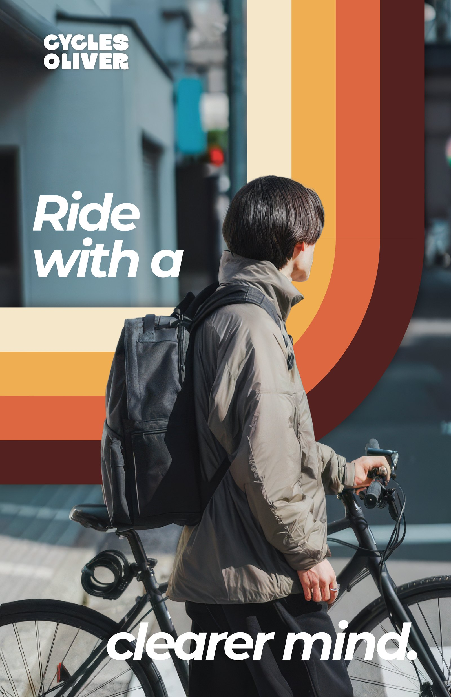
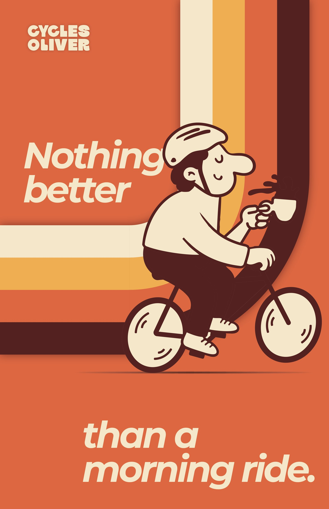

Cycles Oliver
“Life is like riding a bicycle. To keep your balance you must keep moving.”
Albert Einstein

‘Fietser’ is the Dutch word to describe someone who uses a bicycle for transport, rather than for sport. Cycles Oliver wanted to target this market, while having an identity that felt local, fun and secure!


Fun. Local. Secure.







Thank you for checking Cycles Oliver.